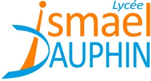

A propos de moi
Je suis étudiant en 5ième et dernière année de l'école d'ingénieur Polytech Nice Sophia en Sciences Informatiques spécialité CASPAR (Cryptographie, Sécurité et Vie Privée dans les Applications et les Réseaux). Auparavant, j'ai obtenu un DUT Informatique à l'IUT d'Aix-en-Provence.
J'arrive à la fin de mon cursus universitaire et par conséquent je suis à la recherche d'un stage de fin d'études d'une durée de 6 mois (mars - septembre 2017).
Passioné d'informatique depuis maintenant plusieurs années, j'arrive à la fin de mon cursus universitaire. J'ai acquis au fil des temps des compétences techniques, en particulier lors de la réalisation des projets listés ci-dessous ou des différents stages, et aussi à gérer et organiser un projet seul ou en équipe.
L'informatique étant un domaine très vaste, il est évident que j'ai quelques préférences. La sécurité est ce qui m'attire le plus d'où le choix de l'option CASPAR. Je tiens à jour un journal en ligne (CyberActu) en sélectionnant les articles que je trouve pertinent. Je suis aussi interessé par le fonctionnement des systèmes d'exploitation en particulier du noyau Linux, le cours de programmation noyau étant l'un de ceux que j'ai le plus apprécié dans ma formation
Une vidéo de présentation est disponible en anglais (avec des fautes et absolument pas ridicule) ici.
Expériences
Emploi saisonnier sur la barrière de péage de Lançon-Provence. Maintenance des voies automatiques et encaissement en cabine
Formation
-
Polytech Nice Sophia
-
DUT Informatique
2012 - 2014
Universite d'Aix Marseille site d'Aix en Provence
-

Baccalaureat S SVT
2009 - 2012
Lycée Ismael Dauphin
Compétences
Projects
Analyse de réseaux sans fil grâce à une radio logicielle C++ Python
Implémentation d'un plugin pour une radio logicielle permettant de déterminer si les réseaux sans fil à portée sont sécurisés. Le principal intérêt ici est l’approche « blackbox » qui permet à toutes personnes de déterminer la communication est sûre.
Conception d'un réseau social autour de la mode PHP Android
Réalisation d’une application mobile permettant aux utilisateurs de partager leurs garde-robes ou de demander l’avis de la communauté pour un prochain achat. L’architecture de l’application a été conçue afin de permettre le passage à l’échelle.
En construction ...